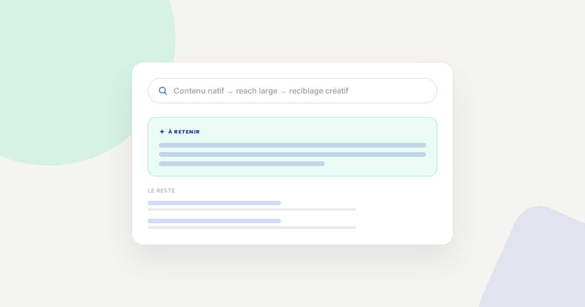
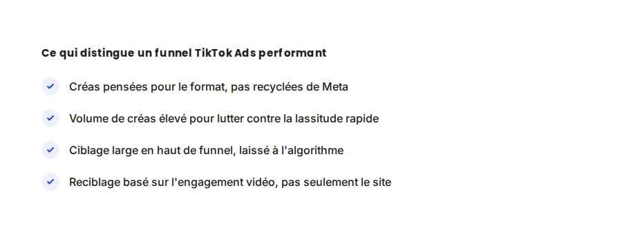

TikTok Ads B2C : le funnel qui fonctionne en 2026
Beaucoup d'annonceurs transposent leur funnel Meta Ads sur TikTok Ads sans l'adapter — et se demandent ensuite pourquoi le coût par acquisition explose. TikTok récompense un fonctionnement différent, plus proche du contenu natif que de la publicité classique.

Dans les comptes TikTok Ads que j'audite, l'erreur la plus fréquente est structurelle : on prend le funnel qui fonctionne sur Meta Ads (ciblage fin, créas publicitaires classiques, entonnoir en plusieurs étapes serrées) et on le transpose tel quel. TikTok ne récompense pas ce fonctionnement — il en récompense un autre, plus proche du contenu que de la publicité.
Ce qui ne change pas
L'objectif d'un funnel publicitaire reste le même sur TikTok que partout ailleurs : capter l'attention, construire l'intérêt, convertir. Le tracking des conversions doit être aussi rigoureux que sur n'importe quelle autre plateforme — le TikTok Pixel et l'Events API fonctionnent sur le même principe de tracking côté serveur que Meta, pour les mêmes raisons de fiabilité.
Ce qui change vraiment
- Le format prime sur le ciblage. L'algorithme TikTok privilégie fortement la performance du contenu (rétention des premières secondes, engagement) pour décider de la diffusion — un ciblage fin sur une audience étroite limite le volume de test dont l'algorithme a besoin pour optimiser.
- La lassitude créative arrive beaucoup plus vite que sur Meta. Une même créa s'essouffle en quelques jours sur TikTok, contre plusieurs semaines sur Meta — ce qui impose un rythme de production de contenu bien plus soutenu.
- Le contenu natif surperforme systématiquement la publicité classique. Une vidéo qui ressemble à du contenu organique (tourné au téléphone, sans habillage publicitaire visible) obtient généralement un coût par résultat inférieur à une créa produite comme une pub traditionnelle.
- Le reciblage se fait sur l'engagement vidéo, pas seulement sur les visiteurs du site. Les audiences de personnes ayant regardé un pourcentage de la vidéo constituent un vivier de reciblage à part entière, souvent plus performant qu'un reciblage classique basé sur le trafic web.

Un exemple qui illustre bien la différence
Sur une marque B2C que j'accompagne, la même offre promue avec une créa « publicitaire » classique (montage soigné, voix off professionnelle) affichait un coût par achat de 34 €. La même offre, testée avec une vidéo tournée au téléphone façon avis client spontané, est descendue à 11 € de coût par achat sur la même période et le même budget. Le message était identique ; seul le format a changé la performance.
Ce qu'il faut faire concrètement
- Produisez au moins 5 à 8 variantes créatives par campagne, pensées nativement pour le format court, plutôt qu'une ou deux créas recyclées d'autres plateformes.
- Laissez le ciblage large en haut de funnel et laissez l'algorithme trouver l'audience pertinente sur la base de la performance du contenu, plutôt que de le restreindre trop tôt.
- Créez des audiences de reciblage sur l'engagement vidéo (25 %, 50 %, 75 % de visionnage) en plus du reciblage classique basé sur le site.
- Renouvelez vos créas toutes les une à deux semaines pour éviter la lassitude, en gardant le même angle de message mais en variant le format visuel.
FAQ
Peut-on utiliser les mêmes créas sur TikTok Ads et Meta Ads ?
Techniquement oui, mais les performances sont généralement décevantes. Les formats qui fonctionnent bien sur TikTok sont spécifiquement natifs (tournés au téléphone, rythme rapide), ce qui diffère souvent de ce qui performe sur Meta.
Faut-il un gros budget pour tester TikTok Ads ?
Non, mais il faut prévoir un budget suffisant pour tester plusieurs créas en parallèle — le format demande plus de volume créatif que de volume budgétaire par créa individuelle.
Le TikTok Pixel suffit-il pour un tracking fiable ?
Comme sur les autres plateformes publicitaires, le pixel seul perd en fiabilité avec les blocages navigateur. L'Events API (équivalent TikTok de la Conversion API) est recommandée en complément.
Envie de structurer votre funnel TikTok Ads ?
Pour aller plus loin, voir la page SMA, la page YouTube Ads, et la page Conversion API.
Pour continuer sur ce sujet.